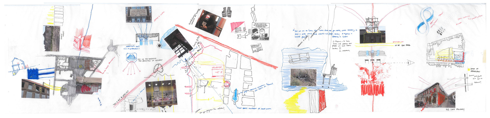

This project is a story, an urban survey, and a cognitive and political inquiry. Towards an architectural
re-tooling of its solidarity movement, it investigates the relation of industry and community in the French port city
of Calais, a strained checkpoint in the enclosure of Fortress Europe and the UK border regime. The project spans themes
of labour, migration, identification, mutuality and protest. It combines fieldwork with archival research, creative writing and visual art.
The second half of this research project was a speculative design work titled The Radical Raccommodeuse.
You can also view the work on the Royal Danish Academy
website.
The symbolic landscape [of lace] is simultaneously fuelled by elements of the physical one;
bullets found in the dunes could be emptied of lead and used
to crimp the hook that is integral to the threadwork of the tullist.
The topic is Calais lace, from its illegal import by English labour migrants in the early 19th century,
through its customary transmission, to its galvanising effect in the industrial-era workers’ struggle.
Its realisation raised this small port town to, ostensibly, lacemaking capital of the world by the 1950s,
and is thus variously memorialised and mythologised in their culture. This historical context is researched
and presented as a community precedent, consisting of an archive of ideologies, actions, concerns, relations and inhabitings.
For the first half of the 19th century, hundreds of skilled mechanics smuggled their looms to Calais and began to work
clandestinely, setting up workshops in marginal domestic spaces like stables, cellars, attics and kitchens which would
become workshops then factories.
In recent years, international media has covered Calais regarding its dense presence of displaced peoples heading to
the UK. We have witnessed the extent that the UK border regime has subjected those displaced on French soil to a hostile
environment. Recent humanitarian crises in Calais coincide with the final stages of decline of its lace
industry. When Queen Victoria wore tulle for her wedding in 1840, she began a long-lasting association
between veiling in lace and a border that signified sacred modesty and a process of becoming, uniting. Now, in the
hometown of this symbolic material, its tectonics are realised in 5m high steel fences, appropriated as tools of urban
violence.
When in 1843 machinery export became legal, the number of
Leavers machines in Calais was already in the thousands, constituting a significant additional population that began to
reorganise the town. For Calais, the machine became spectacle at the centre of the universe. Steam power led to larger structures for more machines, and
by the 1870s the lace industry of Saint-Pierre was divided into thirty-eight grand factories, of which no trace remains.
The once sparse district of Saint-Pierre was drastically scaled-up, both concretely and in the abstract terms of an
industrial capitalist exchange economy, where the notion of the gigantic is translated from pastoral sublime to a social
world of production.
Its heyday in the 1860s saw community buildings, including a washhouse,
church and new town hall, erected around Place Crèvecoeur, opening up new zones of
conversation and relation for the working classes. The 1885 municipal merger of Calais
and Saint-Pierre, owing to success of lace, led to further public projects e.g. the grand theatre.
The industry became so successful that by the mid 20th century Calais was ostensibly the lace capital of the world,
characterised in its community by a common language of space, tools, interactions, bodily movements and creative identity.
Subject to waning trade protections, the lace city of Calais has become wise to its subordinate position
in a globalised world. Previously a communist stronghold, recent decades have seen Calaisiens side with the
patriots against the globalists, with a swing in opinion towards the far right. If you look closely at the net
curtains in the city, you will notice they are striped, comprising rows
of Valencienne bands produced for lingerie. In this city of offcuts there is potential in re-using
the existing built fabric. The challenge is to avoid glorifying lace heritage while recognising it as a
language important to the existing community, and inspecting how it could be useful to a
new solidarities movement.
In Calais, the boarded-up or re-beautified factories that remain amid the graveyards of
others form an eerie landscape. Tim Edensor writes on the importance of industrial ruins
as cognitive bridges for the beliefs and values of those who used to inhabit them. Behind
the gutted perimeters of many Calais lace factories, apartment complexes have been
contrived. When these ruins are renovated by developers their social memory is commodified,
externalised for new middle class protagonists. This approach of facadism flattens the multi-
layered histories of factory life onto its enclosure. The disembowelling of these structures erases
the real-life imprints of the bodies that once inhabited workstations, corridors, break-rooms,
while retaining the emblem of the factory owner.
The cooperative expanded its operations from boulangerie, butcher and grocer
to include a cinema, meeting room and a brewery; it now contains a gym called Basic Fit.
Lace syndicalism is a close-to-hand precedent for Calaisien solidarity, partially catalysed by Owenite traditions
of co-op and a Luddite revolutionary fever of the English migrants. In the working class lace district of Saint-Pierre
there are few traces of its once plentiful Oddfellows societies, soup kitchens, workers cabarets, groups of twenty, and after
their 1884 legalisation, union co-ops. The ideology of anarcho-syndicalism inspired workers to rebel against the state,
politicians and bureaucrats, towards systems
of cooperative economics and forms of workers’ direct democracy, which culminated in the building of the Bourse du Travail, a centre
of working class culture via a union congress, co-operative, as well
as co-educational and performance space.
Chomsky describes anarchism as the dismantling of unnecessary power dynamics, the first step here being recognising what these
are. The Air Loom is a drawing by Napoleonic-era peace activist James Tilly Matthews, of what he believed was a “terrifying
machine whose mesmeric rays and mysterious gasses were brainwashing politicians and plunging Europe into revolution, terror,
and war.” In my drawing, I consider the Leavers lace machine as producing a liminal material that simultaneously obscures
the private and advertising what is in-common. It alludes to the
blurred lines of public and private in the lace-working story, the idea of the internal time of the tool and the exteriorising
effect of a common material or substance such as lace.
In one of the windows of the Michel-Storme workshop a
peacock fans its lacy tectrix, advertising compliance with the
brand of Dentelle de Calais. On the brick below this
somebody has issued a writ in black spray paint: NO BORDERS.
Currently seen as a microcosm of Fortress Europe, Calais cannot come to work today formulates an autonomous city
that can refuse this role. The city on strike presents an imaginary state in which Calais, as a community of individuals
occupying the same terra, can set a precedent in rejecting the city as camp, and how those within inner layers can interact
and possibly counteract the forces of exclusion that leave some on the precarious margins.
In recent social and political theory, the concept of noopolitics supplements biopower as contemporary mode of state-subject
regulation. Noopolitics exits the domain of labour and factory to focus on modes of control over multiple brains by media -
rather than mesmeric rays. The transient confess onto the town, 20 mins and BORED says a signpost at the border,
let us live at the fence.
These utterances
are tragic in their confinement; can we move them again from the façade, the enclosure, to the visceral and operative nooks of a
collective interior – from the beermat to the Bourse? Can we unlock the anarchic ambitions of earlier generations of workers to
undermine the influence of noopolitics? Contesting the mythic unity of lace, a new community of shared experience and co-operation
between those that are not necessarily in-common becomes possible.
The future scenario of autonomous Calais is conceptualised through deconstructed Bourse functions (congress, education, celebration)
distributed throughout the city; these nested sites induce varied actor networks that potentialize a new self-governing capacity.
The first
propositional approach considers a subversive re-framing of the autonomous city as future past, populated by an array of ruined monuments
whose [fabricated] heritage motivates restoration and re-activation. The ruins are re-adorned with signifiers of a more radically
co-operative history, i in fact constructing the 'lost icons' of the community it’s party to inventing. This seeks to capitalise
on the instinctive desire to restore or revert to a better time, a nostalgic and mythically unified state and use it as a forwards-moving force.
One idea for a co-educational scenario draws on film and performance in the history of the lace-workers' movement e.g. congregational
cabarets, cinemas, Bourse. Today going to the cinema involves an unusual investment of mutual time-space with unchosen others.
This now demolished factory site is tooled with fragments lifted from nearby remains, specifically elements that speak to interrupting
the skin. These are made mobile as the story of lace is rearranged according to the youths. The contingent cinema emerges first as
urban playground, then as congress of ideas, then as site of organised dissidence.

Archival photographs from 'Calais Avant Hier' blog and the book 'De la dentelle & des Hommes: the Lace-makers of Calais' by Delphine Loez.